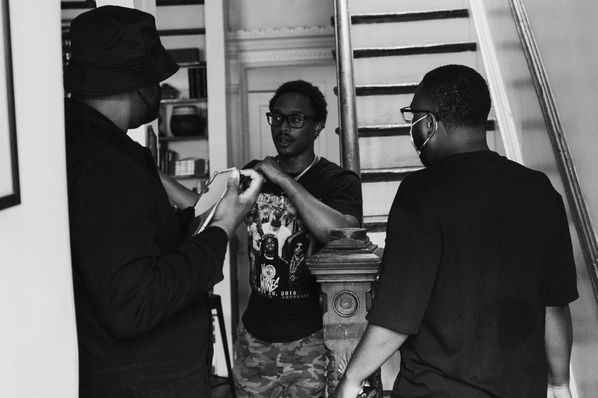

Batty Productions
Elevated beyond scope.

A project seeking its sound.The challenge
Batty Productions first brought HEARTH in for music supervision. As the collaboration developed, it produced a finished piece elevated far beyond its original scope.
Respect the piece. Push the ceiling.Our approach
We approached the project with respect and care, keeping the integrity of the piece while pushing it to its creative ceiling. Every decision honored the original vision while expanding what was possible.
A score that changed the project.The result
The final cut featured a score that significantly elevated the project, and a compelling edit the client hadn’t previously envisioned. What began as a licensing engagement became a full creative collaboration.
“Beyond their undeniable creativity, it’s HEARTH’s motivating spirit that truly sets them apart. They possess an incredible intuition for storytelling, taking the core of a project and breathing something special into anything they touch.”